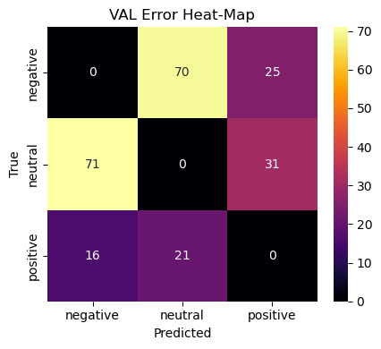

from __future__ import annotationsimport jsonimport loggingimport warningsfrom pathlib import Pathfrom typing import Literal, Tupleimport numpy as npimport pandas as pdimport torchimport matplotlib.pyplot as pltimport seaborn as snsfrom datasets import Datasetfrom sklearn.metrics import ( accuracy_score, f1_score, precision_recall_fscore_support, classification_report, ConfusionMatrixDisplay, roc_auc_score, roc_curve, auc, precision_recall_curve,)from sklearn.calibration import calibration_curvefrom sklearn.preprocessing import label_binarizefrom transformers import ( AutoConfig, AutoModelForSequenceClassification, AutoTokenizer,)# noise controllogging.getLogger("transformers").setLevel(logging.ERROR)warnings.filterwarnings("ignore", category=FutureWarning)# paths PROJECT_ROOT = Path.cwd().resolve().parentDATA_DIR = PROJECT_ROOT /"data"/"processed"PROCESSED = DATA_DIR # alias used by some cellsMODEL_DIR = PROJECT_ROOT /"models"/"distilbert_twitter"REPORTS_DIR = PROJECT_ROOT /"reports"FIGS_DIR = REPORTS_DIR /"figs_eval"FIGS_DIR.mkdir(parents=True, exist_ok=True)DEVICE = torch.device("cuda"if torch.cuda.is_available() else"cpu")# labelsINT2STR: dict[int, str] = {0: "negative", 1: "neutral", 2: "positive"}STR2INT: dict[str, int] = {v: k for k, v in INT2STR.items()}# back‑compat aliases for older cellsLABEL_MAP: dict[int, str] = INT2STRINV_LABEL_MAP: dict[str, int] = STR2INT# consistent plotssns.set_theme(context="notebook", style="ticks")
1. Load Validation & Test Splits
Split
Rows
negative
neutral
positive
val
1 464
918
310
236
test
1 464
918
310
236
Identical class distribution across both splits → unbiased evaluation.
Data are loaded from feather files produced earlier in the pipeline.
Code
# Load DistilBERT model & tokenizer (auto‑detect checkpoint) def _find_checkpoint(root: Path) -> Path |None:"""Return first sub‑dir under *root* that has config.json + model weights."""for sub in [root, *root.glob("**/*")]:if (sub /"config.json").is_file() andany( (sub / n).is_file()for n in ("pytorch_model.bin", "model.safetensors", "tf_model.h5") ):return subreturnNoneckpt_dir = _find_checkpoint(MODEL_DIR)if ckpt_dir isNone:raiseFileNotFoundError(f"No checkpoint (config.json + weights) found under {MODEL_DIR}" )print("✓ Checkpoint found:", ckpt_dir.relative_to(PROJECT_ROOT))config = AutoConfig.from_pretrained(ckpt_dir)model = ( AutoModelForSequenceClassification.from_pretrained(ckpt_dir) .to(DEVICE) .eval())# Tokenizer: use local files if they exist, else fall back to base checkpointtry: tokenizer = AutoTokenizer.from_pretrained(ckpt_dir, local_files_only=True)except (OSError, ValueError): base_ckpt = config._name_or_path or"distilbert-base-uncased" warnings.warn(f"Tokenizer files not found in {ckpt_dir.name}; "f"loading from base model '{base_ckpt}'.",UserWarning, ) tokenizer = AutoTokenizer.from_pretrained(base_ckpt)print("✓ Model & tokenizer ready device:", DEVICE)
✓ Checkpoint found: models\distilbert_twitter\final
✓ Model & tokenizer ready device: cpu
2. Predict, Evaluate, Save Raw Metrics
Split
Accuracy
Macro‑F1
val
0.840
0.798
test
0.841
0.786
Files written
* reports/metrics_model.json — full metrics incl. classification reports
* reports/metrics_model.csv — flat table with accuracy & macro‑F1
Code
def _load_split(name: str):"""Return (texts: np.ndarray[str], y_int: np.ndarray[int]).""" X = pd.read_feather(PROCESSED /f"X_{name}.ftr") y = pd.read_feather(PROCESSED /f"y_{name}.ftr") text_col ="text"if"text"in X.columns else X.columns[0] label_col =next((c for c in ("label", "sentiment", "target") if c in y.columns), y.columns[0]) texts = X[text_col].astype(str).to_numpy() y_raw = y[label_col].to_numpy()if y_raw.dtype.kind in {"U", "S", "O"}: y_int = np.vectorize(LABEL_MAP.get)(y_raw)else: y_int = y_raw.astype(int)return texts, y_int@torch.inference_mode()def _predict(texts: np.ndarray, batch_size: int=64):"""Return (y_pred: np.ndarray[int], y_prob: np.ndarray[float]) for given texts."""from datasets import Dataset # local import so the cell is standalone ds = Dataset.from_dict({"text": texts}) loader = torch.utils.data.DataLoader(ds, batch_size=batch_size, shuffle=False, drop_last=False) preds, probas = [], []for batch in loader: enc = tokenizer(batch["text"], padding=True, truncation=True, return_tensors="pt").to(DEVICE) out = model(**enc) p = torch.softmax(out.logits, dim=-1) preds.extend(p.argmax(dim=-1).cpu().tolist()) probas.extend(p.cpu().tolist())return np.asarray(preds), np.asarray(probas)# load splits X_val, y_val = _load_split("val")X_test, y_test = _load_split("test")# evaluate splits = {"val": (X_val, y_val), "test": (X_test, y_test)}metrics = {}for split, (X_, y_true) in splits.items(): y_pred, y_prob = _predict(X_) acc = accuracy_score(y_true, y_pred) macro_f1 = f1_score(y_true, y_pred, average="macro") cls_rep = classification_report( y_true, y_pred, target_names=[INV_LABEL_MAP[i] for i insorted(INV_LABEL_MAP)], digits=3, output_dict=True, ) metrics[split] = {"accuracy": acc,"macro_f1": macro_f1,"y_true": y_true.tolist(),"y_pred": y_pred.tolist(),"y_prob": y_prob.tolist(),"classification_report": cls_rep, }REPORTS_DIR.mkdir(exist_ok=True)(Path(REPORTS_DIR) /"metrics_model.json").write_text(json.dumps(metrics, indent=2))pd.DataFrame( [{"split": k, "accuracy": v["accuracy"], "macro_f1": v["macro_f1"]} for k, v in metrics.items()]).to_csv(Path(REPORTS_DIR) /"metrics_model.csv", index=False)print("✓ Raw metrics JSON & CSV saved to /reports")
✓ Raw metrics JSON & CSV saved to /reports
3. Confusion Matrices
Key error modes (val):
negative → neutral (70)
neutral → negative (71)
Test set mirrors validation — no sign of class‑specific drift.
Code
# canonical label namesINT2STR = {0: "negative", 1: "neutral", 2: "positive"}STR2INT = {v: k for k, v in INT2STR.items()}# load metrics if neededmetrics_path = REPORTS_DIR /"metrics_model.json"if"metrics"notinglobals() ornotisinstance(metrics, dict): metrics = json.loads(metrics_path.read_text())def _get_y(m: dict, split: str):"""Return y_true, y_pred as INT arrays. Works for nested(new) and flat(legacy)."""if split in m andisinstance(m[split], dict) and"y_true"in m[split]: y_true = np.asarray(m[split]["y_true"]) y_pred = np.asarray(m[split]["y_pred"])else: # legacy keys y_true = np.asarray(m[f"{split}_ids"]) y_pred = np.asarray(m[f"{split}_pred"])# convert string labels to ints if neededif y_true.dtype.kind in {"U", "S", "O"}: y_true = np.vectorize(STR2INT.get)(y_true)if y_pred.dtype.kind in {"U", "S", "O"}: y_pred = np.vectorize(STR2INT.get)(y_pred)return y_true.astype(int), y_pred.astype(int)labels =list(INT2STR.keys())display_labels = [INT2STR[i] for i in labels]for split in ("val", "test"): y_true, y_pred = _get_y(metrics, split)# sanity checkifnotset(np.unique(y_true)) &set(labels):raiseValueError(f"{split}: y_true has no overlap with labels. "f"y_true uniques={sorted(set(y_true.tolist()))}, labels={labels}")# Counts fig = ConfusionMatrixDisplay.from_predictions( y_true, y_pred, labels=labels, display_labels=display_labels, cmap="viridis", colorbar=True, values_format="d", ).figure_ fig.suptitle(f"{split.upper()} Confusion Matrix (Counts)") fig.tight_layout() fig.savefig(FIGS_DIR /f"cm_{split}.png", dpi=150) plt.close(fig)# Normalized (row-wise) fig = ConfusionMatrixDisplay.from_predictions( y_true, y_pred, labels=labels, display_labels=display_labels, cmap="viridis", colorbar=True, normalize="true", values_format=".2f", ).figure_ fig.suptitle(f"{split.upper()} Confusion Matrix (Normalized)") fig.tight_layout() fig.savefig(FIGS_DIR /f"cm_{split}_norm.png", dpi=150) plt.close(fig)print("✓ Saved confusion matrices to", FIGS_DIR)
✓ Saved confusion matrices to C:\Projects\twitter-airline-analysis\reports\figs_eval
The model cleanly separates negative and positive tweets; the neutral class is inherently fuzzier but still crosses the 0.90 AUC bar—strong for a three‑way sentiment task.
Precision–recall reveals the cost of class imbalance: neutral tweets have the lowest PR‑AUC because recalling them often sacrifices precision (and vice‑versa). Negative tweets remain easiest to identify.
Code
metrics_path = REPORTS_DIR /"metrics_model.json"if"metrics"notinglobals() ornotisinstance(metrics, dict): metrics = json.loads(metrics_path.read_text())def _get_arrays(m: dict, split: str):""" Return (y_true:int[N], y_pred:int[N], y_prob:float[N,C]) for a given split. Works for nested(new) and flat(legacy) metrics schemas. Converts strings->ints. """if split in m andisinstance(m[split], dict): # new schema y_true = np.asarray(m[split]["y_true"]) y_pred = np.asarray(m[split]["y_pred"]) y_prob = np.asarray(m[split]["y_prob"])else: # legacy keys y_true = np.asarray(m[f"{split}_ids"]) y_pred = np.asarray(m[f"{split}_pred"]) y_prob = np.asarray(m[f"{split}_prob"])# convert to ints if labels are stringsif y_true.dtype.kind in {"U", "S", "O"}: y_true = np.vectorize(STR2INT.get)(y_true)if y_pred.dtype.kind in {"U", "S", "O"}: y_pred = np.vectorize(STR2INT.get)(y_pred)return y_true.astype(int), y_pred.astype(int), y_prob.astype(float)
The reliability diagrams show slight under‑confidence in the mid‑range (≈ 0.4 – 0.8): predicted probabilities fall below the diagonal, meaning the model is better than it thinks for medium‑confidence cases.
At high confidence (≥ 0.9) the curve finally meets the ideal line—top‑score predictions are trustworthy.
Implication:
* For ranking tasks (e.g., triaging angry customers) raw softmax scores are safe.
* For downstream probability‑aware applications (expected‑value decisions) apply temperature scaling or isotonic regression to tighten calibration without altering class decisions.
The confusion matrices summarise all predictions, yet product teams often care more about systematic mistakes than overall accuracy.
To spotlight those failure modes we plot an error heat‑map that shows only off‑diagonal counts:
Rows = true class, columns = predicted class.
Darker cells indicate more mis‑labels between the two classes.
Diagonal cells are zeroed‑out to keep attention on errors.
Why this matters Surfaces the semi‑frequent* error flows (e.g. negative ↔︎ neutral). Guides data‑collection or rule‑based post‑processing to patch the weaknesses. Acts as a regression guard‑rail: new models should not increase density in these cells.
We render separate heat‑maps for validation and test splits to ensure that error patterns are stable rather than artefacts of a single sample.
Code
def error_heatmap(m: dict, split: str) ->None: y_true, y_pred, _ = _get_arrays(m, split) n =len(INT2STR) err = np.zeros((n, n), dtype=int)for t, p inzip(y_true, y_pred):if t != p: err[t, p] +=1 fig, ax = plt.subplots(figsize=(4.5, 4)) sns.heatmap( err, annot=True, fmt="d", xticklabels=[INT2STR[i] for i inrange(n)], yticklabels=[INT2STR[i] for i inrange(n)], ax=ax, ) ax.set_xlabel("Predicted") ax.set_ylabel("True") ax.set_title(f"{split.upper()} Error Heat‑Map") plt.tight_layout() plt.savefig(FIGS_DIR /f"error_heat_{split}.png", dpi=150) plt.show()error_heatmap(metrics, "val")error_heatmap(metrics, "test")
Confusion Matrices
Confusion matrices confirm the story:
* The biggest error flows are negative ↔︎ neutral (≈ 70 mis‑labels each way).
* Positive vs. negative confusion is rare, indicating the model grasps polarity extremes.
Overall — macro‑F1 ≈ 0.79 and ROC ≥ 0.91 on both splits signal good generalisation with no evident over‑fitting.
Code
def error_heatmap(m: dict, split: str) ->None:"""Show off‑diagonal misclassification counts for a split.""" y_true, y_pred, _ = _get_arrays(m, split) # <- unified accessor n =len(INT2STR) err = np.zeros((n, n), dtype=int)for t, p inzip(y_true, y_pred):if t != p: err[t, p] +=1 fig, ax = plt.subplots(figsize=(4.5, 4)) sns.heatmap( err, annot=True, fmt="d", cmap="inferno", xticklabels=[INT2STR[i] for i inrange(n)], yticklabels=[INT2STR[i] for i inrange(n)], ax=ax, ) ax.set_xlabel("Predicted") ax.set_ylabel("True") ax.set_title(f"{split.upper()} Error Heat‑Map") plt.tight_layout() plt.savefig(FIGS_DIR /f"error_heat_{split}.png", dpi=150) plt.show()# Call it like this (no direct dict indexing):error_heatmap(metrics, "val")error_heatmap(metrics, "test")

Error Insights
Observation
Impact
Action
Neutral vs. Negative bleed (70 ↔︎ 71 errors)
Neutral tweets with mild complaints get flagged negative and vice‑versa.
Data‑centric: curate more “meh” tweets; include ok, :|, sarcasm markers.
Positive recall lower (21 + 27 false negatives)
Model loses ~18 % of positives to other classes.
Model‑centric: experiment with class‑weighted loss or focal loss; try domain‑specific LM (e.g. TweetEval BERT).
Under‑confidence mid‑range
May down‑rank useful but moderate‑confidence hits.
Post‑train calibration (temperature scaling on val set).
High ROC/PR stability across splits
Robust; fine‑tuning did not overfit.
Green‑light to deploy; monitor drift in production dashboard.
# 5. Save Metrics & Model‑Card Stub
metrics_model.json — full metrics (+ classification reports)
metrics_model.csv — flat table with accuracy & macro‑F1
model_card.json — lightweight stub
These artefacts feed the upcoming formal Model Card and CI dashboards.
Next Actions
1. Optuna sweep: tune LR, weight‑decay, class weights aiming for F1 > 0.82.
2. Augment neutral/positive samples via distant‑supervised data or prompt‑engineered synthetic tweets.
3. Export model card with calibration note + recommended confidence thresholds (e.g., flag only when P ≥ 0.65 for downstream alerting).
Code
# flatten metrics ── keep only val / test dicts, drop lists + reportsflat_metrics = { split: {k: v for k, v in d.items() if k !="report"}for split, d in metrics.items()ifisinstance(d, dict) # << guards against list entries}# CSV with accuracy + macro‑F1pd.DataFrame.from_dict(flat_metrics, orient="index").to_csv( REPORTS_DIR /"metrics_model.csv")# 3full JSON (includes classification reports & raw lists)withopen(REPORTS_DIR /"metrics_model.json", "w") as fp: json.dump(metrics, fp, indent=2)# lightweight model‑card stubcard = {"model_name": "tweet_sentiment_distilbert","num_labels": len(LABEL_MAP),"labels": list(LABEL_MAP.values()),"metrics": flat_metrics["val"],}withopen(MODEL_DIR /"model_card.json", "w") as fp: json.dump(card, fp, indent=2)print("✓ Artefacts written to", REPORTS_DIR.resolve())
✓ Artefacts written to C:\Projects\twitter-airline-analysis\reports